Intro
I am a 3rd year engineering student currently enrolled at l'École de Technologie Supérieure (ÉTS) in Montreal.
My studies are focused on systems level software and computer architecture.
Prior to this, I had completed an associates degree in Information Technologies (Internet and Robotics).
My main regions of interest and career aspirations are the following:
Software architecture
Distributed systems and databases
Cloud infrastructure
Web development
On the sidelines, I am an amateur bassist and bonsai cultivator that drinks way too much tea.
I spend my time picking up new hobbies, learning new tech, watching conferences and cooking.
Familiar tech
Languages:
Databases:
Tooling:
Web:
LVQ Neural Net
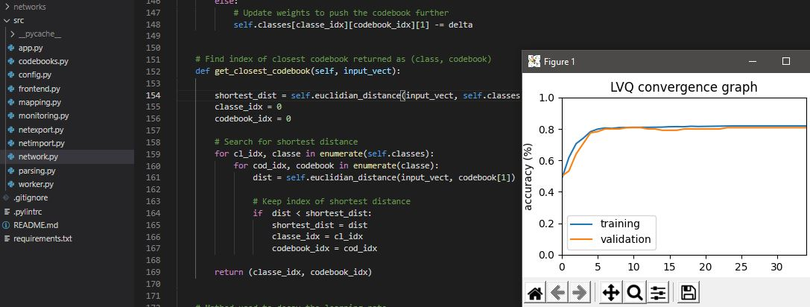
Tech: Python, Numpy, Matplotlib, QT
This project was completed in the context of a Machine Learning course in university. It consisted of writting
an MFCC recognition neural net with a Learning Vector Quantization model from scratch to recognize vocal data.
MLP Neural Net
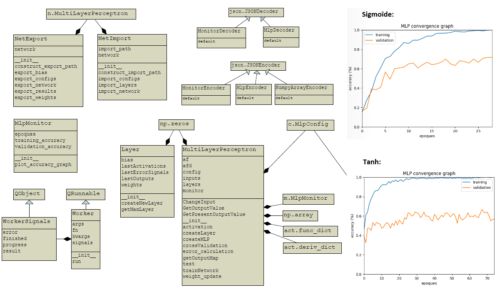
Tech: Python, Numpy, Matplotlib, QT
This project was completed in the context of a Machine Learning course in university. It consisted of writting
an MFCC recognition neural net with a Multilayer Perceptron model from scratch to recognize vocal data.
Lynx Rover
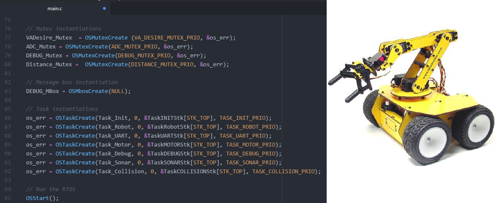
Tech: Linux, C, UcOS-II, ARM Cortex-M0
This project was completed in the context of an embedded systems course in university.
It consisted of writting libraries and an RTOS infrastructure for hardware interaction with Motors, Buses (I2C and SPI), Sonars, ADCs, and various other peripherals on an STM32F0Discovery Board.
Jtrakt
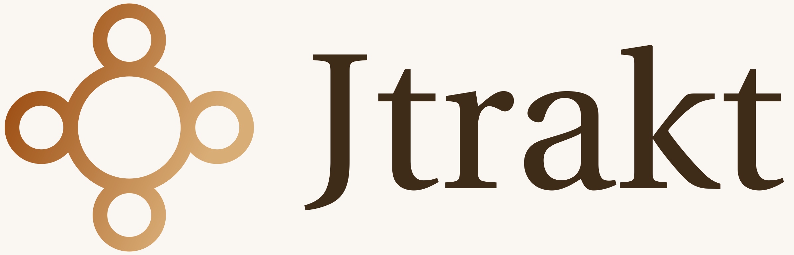
Tech: React, Typescript, Golang, Material-UI, MongoDB, Docker
This most recent project is the groundwork for a web app aimed at tracking work opportunities and job applications.
It will consist of a dockerized microservice architecture (UI, Gateway, Backend) utilizing Github OAuth.
Go-Basics
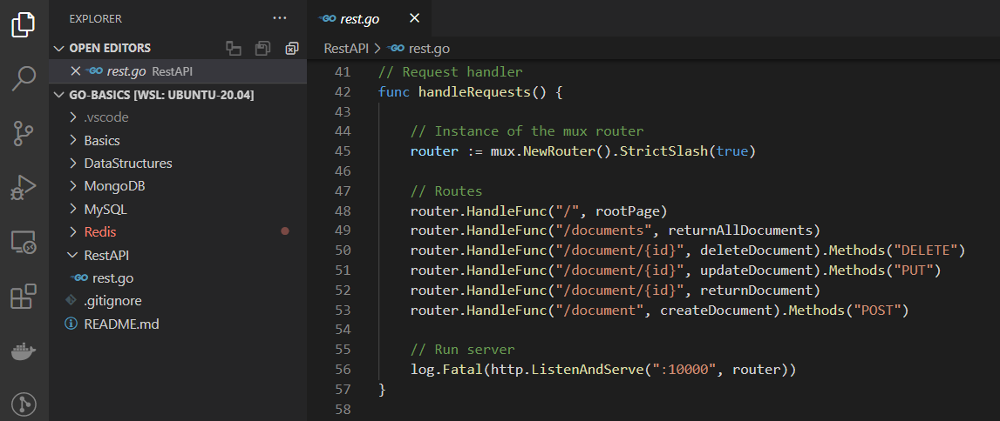
Tech: Golang, MySQL, Redis, MongoDB, Docker
This project contains several code snippets and short programs for learning Golang (via tutorials).
The database settings used are included in individual docker-compose files.
Echo Server
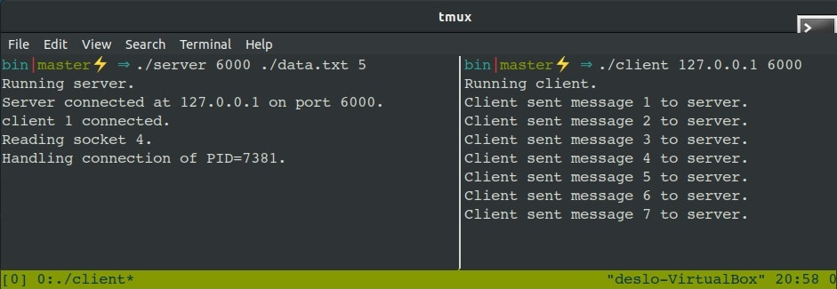
Tech: C, Linux
This program is a simple multi-threaded server which accepts client connections via sockets from multiple processes.
By default, it runs on localhost and stores client PIDs into a file.
Pstree Clone
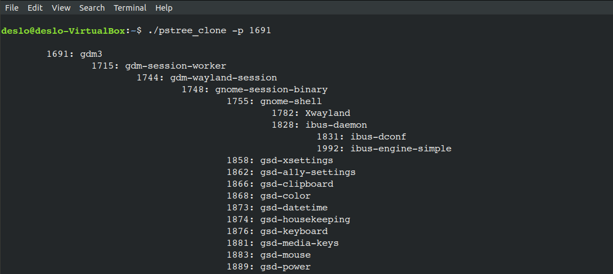
Tech: C, Linux
This command line tool is a replica of the Linux command pstree.
It involves construction of a non-binary tree containing nested linked lists and utilizes data from the /proc directory.
Mini-Shell
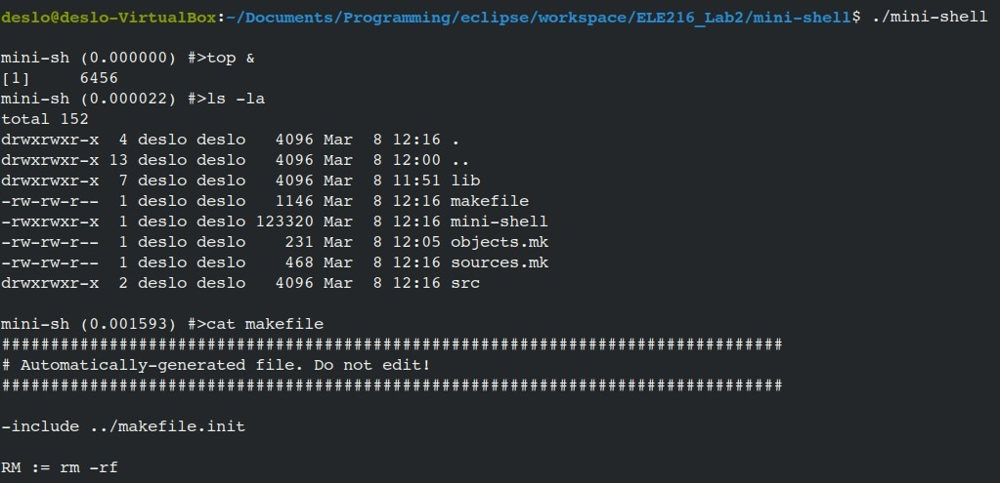
Tech: C, Linux
This program is a minimal bash shell wrapper.
It handles running commands in foreground/background and provides the process execution time of the last command.
Ghiblist Web App
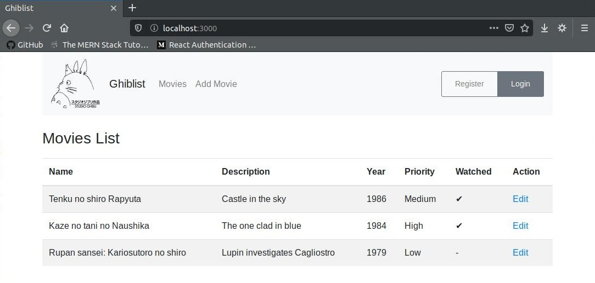
Tech: NodeJs, React, MongoDB
This project was a first introduction to using JS for building a frontend and backend.
It involved API development with Axios to maintain a list of movies in a MongoDB database.
Circuit Analysis
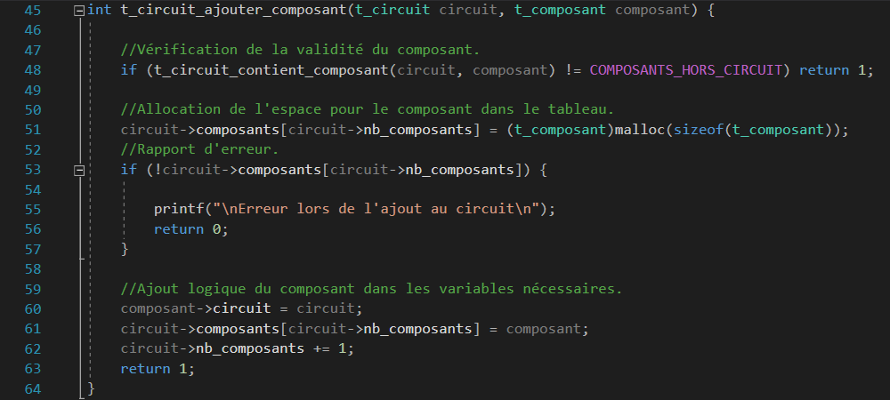
Tech: C
This program analyzes a BMP image of a circuit and finds the connections between each component.
It uses a path finding algorithm similar to a flood fill.
BitCrypto
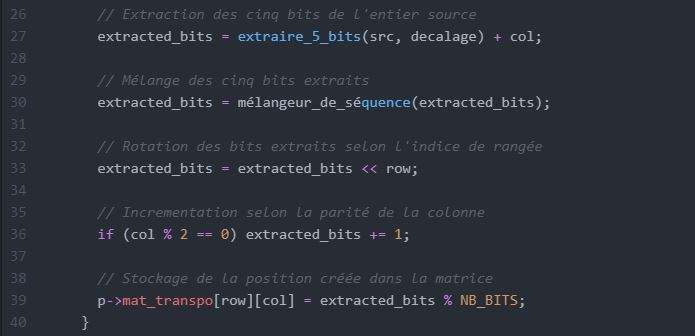
Tech: C
A little command line tool permitting scrambling and unscrambling of files on a bitwise level.
This tool uses a secret key that seeds the whole process.
Smartwatch Altimeter
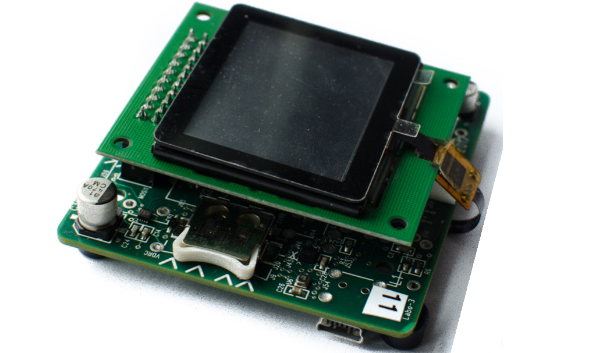
Tech: C
During this project, a colleague and I designed an embedded platform for clients in Australia.
We wrote a bootloader, a collection of sensor libraries and incorporated a GUI for ARM cortex M4.
Position: Software Engineering Intern
During my second university internship, I was assigned to the Dream Chaser Communications Subsystem (DCCS) project destined to SNC and NASA.
My tasks were composed of behavior driven development in Python and flight software development in C/C++.
Position: Full-Stack Software Engineering Intern
During my first university internship, I joined a team responsible for internal and client tool development for the automation industry.
My main mandate was application development in C# that delt with high throughput SQL management and proprietary cloud interactions in XML.
Position: New Products Introduction Technician
During my second college internship, I was a part of a team tasked with validation and testing of preproduction prototypes.
I worked mainly on the EX1 model of handheld optical devices (testing and firmware injeciton).
I was also tasked with software/hardware reverse engineering of an acquired companies server platform.
Position: Laboratory Technician
For my last year of college, I was employed in the electronics department as a laboratory technician.
My day to day tasks included: assistance to students, equipment repair and rental, inventory management, laboratory upkeep and department supervision.
Position: Engineering Support Technician
During my first college internship, I travelled to Mexico to work in an optical research facility in Léon, Guanajuato.
I got the chance to learn Spanish and acquire skills by programming machine vision based motor positionning systems. Furthermore I picked up some knowledge on 3D printing.